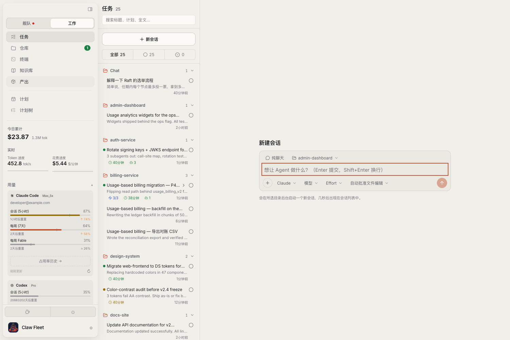
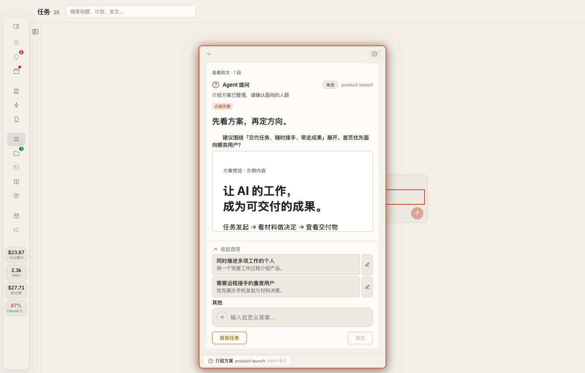
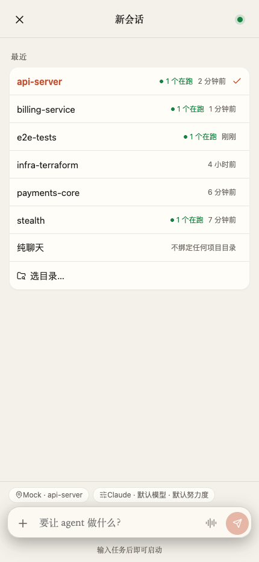

想到补充，随时加一句。
Fleet 发起的任务运行时，可以排队补充要求；停下来后，也能继续对话。手上的工作始终跟着项目走。
你的个人 AI 工作台。
把 Claude Code、Codex 和 dsh 带到一起。按项目推进工作，看着材料做决定，让这次的成果，也能成为下次的起点。
下载 Claw Fleet看看工作怎么展开 免费开源。使用你自己的 AI 工具与账号。
选择项目和 AI 工具，附上资料，给出方向。后续的补充和对话，接着在这个工作区里进行。

看一份方案、一张图或一段文档，再给任务下一步方向。问题与回答，都能找到对应的工作。

按项目查找产出，预览文档和媒体，记一条备注、收藏下来，或直接把文件导出。
当前界面 · 示例数据
项目、对话、需要决定的事，还有最后留下的成果。
Fleet 发起的任务运行时，可以排队补充要求；停下来后，也能继续对话。手上的工作始终跟着项目走。
助手带回的方案、图片和文档，就在需要你判断的地方。不用重新拼一遍上下文，才知道该怎么回答。
打开交付物、导出文件，之后再回来找。值得复用的结论，可以留在有版本记录的项目知识库里。

当前手机界面 · 示例数据
冒出来的想法，不用等回家再交代。用手机发起任务，选好项目和执行设备；需要你判断时，再回来接手。
事情多起来、做得久一点，工作台也能跟着展开。
任务跟着工作区组织。需要看得更细时，文件、Git 与终端就在旁边。
找回之前的报告，查看版本，把已有结论引用到下一项任务。
长任务可以使用计划与交接说明；重复工作可以排进日程，也能等条件准备好再继续。
Claude Code、Codex，还有 dsh
选择你正在使用的工具和模型。dsh 可以连接已配置的模型提供商；各工具仍使用各自的账号与访问权限。装好桌面应用，连上你的 AI 工具，给下一件工作找个地方。
页面展示当前开发界面；下方提供最近稳定版下载，手机布局可能有所不同。
目前可从 GitHub 下载。国内镜像开通后会在这里提供。
chmod +x fleet-linux-x64
./fleet-linux-x64 webui在浏览器打开 http://127.0.0.1:4571。ARM64 请把两条命令中的 x64 都替换为 arm64。
在设置里检查或安装支持的工具，再登录账号或配置提供商凭证。模型订阅和 API 用量单独计费。
选择项目，也可以先用纯聊天。附上资料，选好工具与模型，说清想做的工作。
开启 Mobile 并配对手机。保持运行 Fleet 的主机在线，就能远程跟进任务和处理决定。
Fleet 接入 Claude Code、Codex 和 dsh。使用前需要安装并配置对应工具。dsh 可选择已配置提供商的模型；具体可用性取决于提供商和你的凭证。
Claw Fleet 免费开源，采用 AGPL-3.0 协议。AI 工具、模型订阅和 API 用量另外计费。Fleet 中显示的费用是根据用量估算的。
执行任务的主机需要保持在线。手机配对的是你的电脑时，电脑和 Fleet 都要运行；也可以把 fleet webui 部署在另一台保持在线的机器上。
语音输入会转成文字，发送前可以修改。是否可用取决于浏览器或设备的识别服务，以及麦克风权限；不是双向实时语音通话。
产出页展示由助手或产物命令加入的文件，支持的格式可以预览与导出。手机经由中继预览单文件上限为 16 MiB，更大的文件请在桌面处理。
Fleet 支持计划、交接说明、日程和条件等待。交接会带着简报启动新会话，不等于无限上下文；这些工作方式也依赖配置和具体助手的支持。
Fleet 读取本机会话数据，AI 工具连接各自配置的提供商。手机配对桌面时经由中继访问，也支持自建中继。Fleet 本身不包含模型账号或托管云工作台订阅。
下载区开通国内镜像后，可以选择国内线路，GitHub 官方发布作为备用。手机目前可以从 Fleet 的配对链接进入；这里的下载不包含原生手机应用安装包。